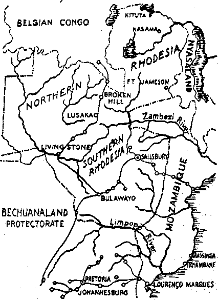
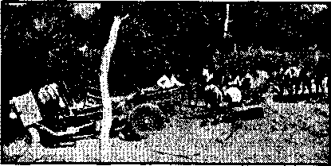
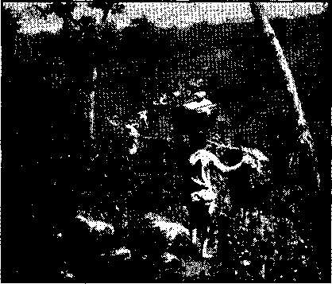
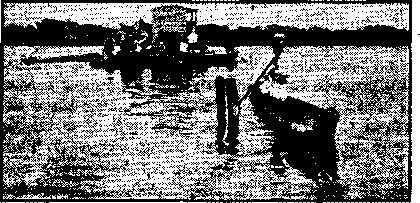
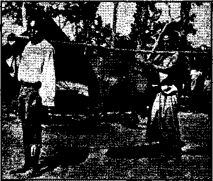
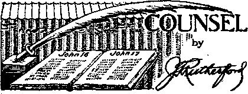
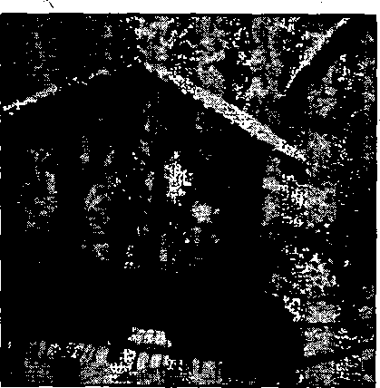
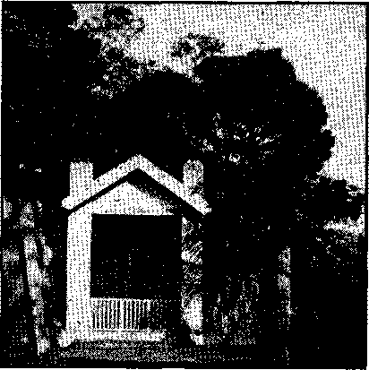
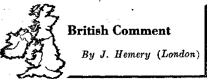

Contents ’
The New Government
Under the Totalitarian Flag The Cross in Brazil f
How Crosses Came to Be Put on Roads 24
Right This Way to the Divorce Counter 25
The Deceased Cardinal’s Ambition
Counsel by J. F. Rutherford
Pius XII’s and Stalin’s Comrade (Part 3)
British Comment
Three-Year-Old Tobacco Addict .
Published every other Wednesday by WATCHTOWER BIBLE AND TRACT SOCIETY, INC.
117 Adams St, Brooklyn, N. Y., U. S. A.
Editor Clayton J. Woodworth
Business Manager Kathan H. Knorr
Five Cents a Copy
fl a year In the United States
>1.25 to Canada and all other countries
NOTICE TO SUBSCRIBERS
Remittances: For your own safety, remit by postal or express money order. When coin or currency Is lost In the ordinary malls, there Is no redress. Remittances from countries other than those named below may be made to the Brooklyn office, but only by International postal money order.
Receipt of a new or renewal subscription will be acknowledged only when requested. Notice of Expiration is sent with the Journal one month before subscription expires. Please renew promptly to avoid loss of copies. Send change of address direct to us rather than to the post office. Your request should reach us at least two weeks before the date of Issue with which It Is to take effect. Send your old as well as the new address. Copies will not be forwarded by the post office to ybur new address unless extra postage Is provided by you.
Published also In Afrikaans, Bohemian, Danish, Dutch, Finnish, French, German, Greek, Hungarian, Japanese, Norwegian, Polish, Portuguese, Spanish, Swedish, Ukrainian; also special Australian edition In English.
OFFICES FOR OTHER COUNTRIES
England 34 Craven Terrace, London, W. 2
Canada 40 Irwin Avenue, Toronto B, Ontario Australia 7 Beresford Road, Smithfield. N.S.W. South Africa 623 Boston House, Cape Town
Entered as second-class matter at Brooklyn, N. Y., under the Act of March 3, 1879.
’ Appetizers
The Retort Discourteous .,
The two little colored boys had had a falling out, and were saying unkind things to aid about each other, their kinsfolk, their friends, anything that would leave a sting. '
“An’ look at you’ mammy,” added Sambo. “She takes in washin’, don’ she?”
“Sho she do,” replied Hambone, defiantly. "You don’ think she’s lev it out on de line lessen you’ pappy wuz in jail, does you?”— Labor.
1 Agin the Government .
‘ “My friend, I think that Franklin D. Roosevelt is the greatest man this country has seen.”
“I’m agin him.”
“Don’t you know that behind this man there is an unconquerable power which controls and influences him?”
"I am agin her, too. . . . ”—Kellygram. .
Rea*on for the Delay
A weekly newspaper, clearing up a misunderstanding, explained that, “Owing to the lack of space and the rush of editing this issue, several births and deaths will be postponed until next week.”
Correct EJngtith
Teacher: Tony, what does responsible mean ?
Tony; If you had two buttons on your pants and one came loose, the other would be responsible.
Move On ■.
Mr. Jones: Good'night! Out of gas right here in the middle of traffic!
Mrs. Jones: Well, you can’t stop for that now; here cornea a cop.
An Unreeeonable Customer
Customer: That suit you sold me .for $8, when I got home I found moths in it.
Dealer: Veil! Vat do you expect to get in an $8 suit—hummingbirds?
Why Hck on India?
Boy: Dad, do you know that in some parts of India a man doesn’t know his wife until he marries her?
Dad: Why single out India ?—Lyre.
“And in His name shall the nations hope.”—Matthew 12:21, A.R.V.
Volume XXI Brooklyn, N. Yo Wednesday, June 26, 1340 , Number 54?
IT HAS many times recently been well said that no credence can be given to the word of the Nazi leaders. They delight to indulge in falsehoods. The Roman Catholic Hierarchy, and particularly the Roman Catholic Press, is exactly in the same class, preferring to resort to lies rather than to tell the truth. This they do in order to prejudice the public in their own behalf. This is exactly what Jehovah God in His Word, the Bible, said about that institution long ago, to wit: “Ye have said, We have made a covenant with death, and with hell are we at agreement . . . : for we have made lies our refuge, and under falsehood have we hid ourselves.” (Isa. 28:15) Members of the Hierarchy, and particularly their newspapers, believe they can tell anything and get away with it. Here is a case exactly in point:
Before the United States Supreme Court the case of Cantwell vs. The State of Connecticut was being heard on appeal. It is usual for members of the'Court to propound questions to counsel during argument for the purpose of clarifying the issues before the Court. This case was being argued by counsel before the full Supreme Court in April last. In the course of the argument Chief Justice Hughes propounded this question to counsel: “Is there no limit at all to what you can do when you think you are worshiping God?” Counsel replied: “Not in this case; because defendants are clearly within their rights.”
Based upon this question and the answer, the Catholic Press throughout the
JUNE 29, 1940
United States and in many foreign Countries has recently repeatedly stated that Chief Justice Hughes rebuked counsel because of insulting the Hierarchy and criticizing their religion. Nothing could be farther from the truth.
During the presentation of his argument for the State of Connecticut counsel for the State wTas asked the question by Mr. Justice McReynolds, “Was it not true that the message that Christ Jesus proclaimed was unpopular in his day?” The attorney replied, “It was, and, if I remember my Bible correctly, it also tells what happened to Jesus for proclaiming that message.”
There is no evidence whatsoever that any member of the Supreme Court expressed his view or took sides during the atgument. The statements of the Catholic Press that Chief Justice Hughes was rebuking Jehovah’s witnesses is an insult to the chief justice. No man in America stands higher than Chief Justice Hughes, and no one could properly accuse him of such things as the Catholic Press has attributed to him.
The best rebuke, however, to the Roman Catholic Hierarchy and its press is the Opinion of the entire Court handed down in this case on May 20, 1940. The opinion is unanimous and speaks for itself and brands the Catholic Press as deliberate falsifiers. Let those who are interested in truth and righteousness read this Opinion and see that the Catholic Hierarchy and the Nazi leaders are in the same class, both being members of the Ananias Club. The unanimous opinion of the Supreme Court follows:
Supreme Court oe the United States
NO. 632.—October To rm, 1939.
Jesse Cantwell, Newton Cantwell and Russell Cantwell, Appellants, vs.
The State of Connecticut.
On Appeal from and Certiorari to the Supreme Court of Errors of the State of Connecticut.
[May 20, 1940.]
Mr. Justice Roberts delivered the opinion of the Court.
Newton Cantwell and his two sons, Jesse and Russell, mem hers of a group known as Jehovah’s witnesses, and claiming to be ordained ministers, were arrested in New Haven, Connecticut, and each was charged by information in five counts, with statutory and common law offenses. After trial in the Court of Common Pleas of New Haven County each of them was convicted on the third count, which charged a violation of § 6294 of the General Statutes of Connecticut,1 and on the fifth count, which charged commission of the common law offense of inciting a breach of the peace. On appeal to the Supreme Court the conviction of all three on the third count was affirmed. The conviction of Jesse Cantwell, on the fifth count, was also affirmed, but the conviction of Newton and Russell on that count was reversed and a new trial ordered as to them.2
By demurrers to the information, by requests for rulings of law at the trial, and by their assignments of error in the State Supreme Court, the appellants pressed the contention that the statute under which the third count was drawn was offensive to the due process clause of the Fourteenth Amendment because, on its face and as construed and applied, it denied them freedom of speech and prohibited their free exercise of religion. In like manner they made the point that they could not be found guilty on the fifth count, Without violation of the Amendment.
We have jurisdiction oh appeal from the judgments on the third count, as there was drawn in question the validity of a state statute under the federal Constitution, and the decision was in favor of validity. Since the conviction on the fifth count was not based upon a statute, but presents a substantial question under the federal Constitution, we granted the writ of certiorari in respect of it.
The facts adduced to sustain the convictions on the third count follow. On the day of their arrest the appellants were engaged in going singly from house to house on Cassius Street in New Haven. They were individually equipped with a bag containing books and pamphlets on religious subjects, a portable phonograph and a set of records, each of which, when played, introduced, and was a description of, one of Hie books. Each appellant asked the person who responded to his call for permission to play one of the records. If permission was granted he asked the person to buy the book described and, upon refusal, he solicited such contribution towards the publication of the pamphlets as the listener was willing to make. If a contribution was received a pamphlet was delivered upon condition that it would be read. .
, Cassius Street is in a thickly populated neighborhood, where about ninety per cent of the residents are Roman Catholics. A phonograph record, describing a book entitled “Enemies”, included an attack on the Catholic religion. None of the persons interviewed were members of Jehovah’s witnesses.
The statute under which the appellants were charged provides:
“No person shall solicit money, sendees, subscriptions or any valuable thing for any alleged religious, charitable or philanthropic cause, from other than a member of the organization for whose benefit such person is soliciting or within the county in which such person or organization is located unless sueh cause shall have been approved by the secretary of the public welfare eouneil. Upon application of any person in behalf of such cause, the secretary shall determine whether sueh cause is a religious one or is a bona fide object of charity or philanthropy and conforms to reasonable standards of efficiency and integrity, and, if he shall ftp find, shall approve the same and issue to the authority in charge a certificate to that effect. Such certificate may he revoked at any time. Any person violating any provision of this section shall be fined not more than one hundred dollars ot imprisoned, not more than thirty days or both.”
The appellants claimed that their activities were not within the statute but consisted only of distribution of books, pamphlets, and. per iodicals. The State Supreme Court construed the finding of the trial court to be that “in addition to the sale of the books and the distribution of the pamphiets the defendants were also soliciting contributions or donations of money for an alleged religious cause, and thereby came within the purview of the statute.” It overruled the contention that the Act, as applied to the appellants, offends the due process clause of the Fourteenth Amendment, because it abridges or denies religious freedom and liberty of speech and press. The court stated that it was the solicitation that brought the appellants within the sweep of the Act and not their other activities in the dissemination of literature. It declared the'legislation constitutional as an effort by the State to protect the public against fraud and imposition in the solicitation of funds for what purported to be religious, charitable, or philanthropic causes.
The facts which were held to support the conviction of Jesse Cantwell on the fifth count were that he stopped two men in the street, asked, and received, permission to play a phonograph record, gnd played the record “Enemies”, which attacked the religion and church of the two men, who were Catholics. Both were incensed by the contents of the record and were tempted to strike Cantwell unless he went away. On being told to be on his way he left their presence. There was no evidence that he was personally offensive or entered into any argument with those he interviewed.
The court held that the charge was not assault or breach of the peace or threats on Cantwell’s part, but invoking or inciting others to breach of the peace, and that the facts supported the conviction of that offense.
First. We hold that the statute, as construed and applied to the appellants, deprives them of their liberty without due process of law in contravention of the Fourteenth Amendment. The fundamental concept of liberty embodied in that Amendment embraces the liberties guaranteed by the First Amendment? The First Amendment declares that Congress shall make no law respecting an establishment of religion or prohibiting the free exercise thereof. The Fourteenth Amendment has rendered the legislatures of the states as incompetent as Congress to enact sueh law’s. The constitutional inhibition of legislation on the subject
a Schneider «. State, 308 U. S. 147,160. of religion has a double aspect. On the one hand, it forestalls compulsion by law of the acceptance of any creed or the practice of any form of worship. Freedom of conscience and freedom to adhere to sueh religious organization or form of worship as the individual may choose cannot be restricted by law. On the other hand, it safeguards the free exercise of the chosen form of religion. Thus the Amendment embraces two concepts,—freedom to believe and freedom to act. The first is absolute but, in the nature of things, the second cannot be. Conduct remains subject to regulation for the protection of society.3 The freedom to act must have appropriate definition to preserve the enforcement of that protection. In every case the pow’er to regulate must be so exercised as not, in attaining a permissible end, unduly to inf ringe the protected freedom. No one would contest the proposition that a state may not, by statute, wholly deny the right to preach or to disseminate religious views. Plainly such a previous and absolute restraint would violate the terms of the guarantee.’ It is equally clear that a state may by general and non-discriminatory legislation regulate the times, the places, and the manner of soliciting upon its streets, and of holding meetings thereon; and may in other respects safeguard the peace, good order'and comfort of the community’, without unconstitutionally invading the liberties protected by the Fourteenth Amendment. The appellants are right in their insistence that the Act in question is not such a regulation. If a certificate is procured, solicitation is permitted without restraint but, in the absence of a certificate, . solicitation is altogether prohibited. ’
The appellants urge that to require them to obtain a certificate as a condition of soliciting support for their views amounts to a prior restraint on the exercise of their religion within the meaning of the Constitution. The State insists that the Act, as construed by the Supreme Court of Connecticut, imposes no previous restraint upon the dissemination of' religious views or teaching but merely safeguards against the perpetration of frauds under the cloak of religion. Conceding that this is so, the question remains whether the method adopted by Connecticut to that end transgresses the liberty safeguarded by the Constitution.
The general regulation, in the public interest, of solicitation, which does not involve any religious test and does not unreasonably obstruct or delay the collection of funds, is not open to any constitutional objection, even though the collection be for a religious purpose. Such regulation would not constitute a prohibited previous restraint on the free exer-■ cise of religion or interpose an inadmissible obstacle to its exercise.
It will he noted, however, that the Act requires an application to the secretary of the public welfare council of the State; that he is empowered to determine whether the cause is a religious one, and that the issue of'a certificate depends upon his affirmative action. If he finds that the cause is not that of religion, to solicit for it becomes a crime. He is not to issue a certificate as a matter of course. His decision to issue or refuse it involves appraisal of facts, the exercise of judgment, and the formation of an opinion. He is authorized to withhold his approval if he determines that the cause is not a religious one. Such a censorship of religion as the means of determining its right to survive is a denial of liberty protected by the First Amendment and included in the liberty which is within the protection of the Fourteenth.
The State asserts that if the licensing officer acts arbitrarily, capriciously, or corruptly, his action is subject to judicial correction. Counsel refer to the rule prevailing in Connecticut that the decision of a commission or an administrative official will be reviewed upon a claim that 'fit works material damage to individual or corporate rights, or invades or threatens such rights, or is so unreasonable as to justify judicial intervention, or is not consonant with justice, or that a legal duty has not been performed.”0 It is suggested that the statute is to be read as requiring the officer to issue a certificate unless the cause in question is clearly not a religious one; and that if he violates his duty his action will be corrected by a court.
To this suggestion there pre several sufficient answers. The line between a discretionary and a ministerial act is not always easy to mark and the statute has not been construed by the State court to impose a mere ministerial duty on the secretary of the welfare council. Upon his decision as to the nature of the b Woodmont Assn. v. Milford, 85 Conn. 517, 522; see also Connecticut Co. v. Norwalk, 89 Conn, 528, 531, caused the right to solicit depends. Moreover, the availability of a judicial remedy for abuses in the system of licensing, still leaves that system one of previous restraint which, in the field of free speech and press, we have held inadmissible, A statute authorizing previous restraint upon the exercise of the guaranteed freedom by judicial decision after trial is as obnoxious to the Constitution as one providing for like restraint by administrative action?
Nothing we have said is intended even remotely to imply that, under the cloak of religion, persons may, with impunity, commit frauds upon the public. Certain!;" penal laws are available to punish such conduct. Even the exercise of”1 religion may be at some slight inconvenience in order that the state may protect its citizens from injury. Without doubt a state may protect its citizens from fraudulent solicitation by requiring a stranger in the community,, before permitting him publicly to solicit funds for any purpose, to establish his identity and his authority to act for the cause which he purports to represent.4 5 The state is likewise free to regulate the time and manner of solicitation generally, in the interest of public safety, peace, comfort or convenience. But to condition the solicitation of aid for the perpetuation of religious views or systems upon a license, the grant of which rests in the exercise of a determination by state authority as to what is a religious cause, is to lay a forbidden burden upon the exercise of liberty protected by the Constitution.
Second. We hold that, in the circumstances disclosed, the conviction of Jhsse Cantwell on the fifth count must be set aside. Decision as to the lawfulness of the conviction demands the weighing of two conflicting interests. The fundamantai law declares the interest of the United States that the free exercise of religion be not prohibited and that freedom to communicate information and opinion be not abridged. The state of Connecticut has an obvious interest in the preservation and protection of peace and good order within her borders. We must determine whether the alleged protection of the State’s interest, means to which end would, in the absence of limitation by the federal Constitution, lie wholly within the State’s discretion, has been pressed,' in this instance, to a point where it has come into
fatal collision with the overriding interest -protected by the federal compact.
Conviction on the fifth count was not pursuant to a statute evincing a legislative judgment that street discussion of religious affairs, because of its tendency to provoke disorder, should be regulated, or a judgment that the playing of a phonograph on the streets should in the interest of comfort or privacy be limited or prevented. Violation of an Act exhibiting such a legislative judgment' and narrowly drawn to prevent the supposed evil, would pose a question differing from that we must here answer.6 Such a declaration of the State’s policy would weigh heavily in any challenge of the law as infringing constitutional limitations. Here, however, the judgment is based on a common law concept of the most general and undefined nature. The court below has held that the petitioner’s conduct constituted the commission of an offense under the State law, and we accept its decision as binding upon us to that extent.
The offense known as breach of the peace embraces a great variety of conduct destroying or menacing public order and tranquility. It includes not only violent acts but acts and words likely to produce violence in others. No one would have the hardihood to suggest that the principle of freedom of speech sanctions incitement to riot or that religious liberty connotes the privilege to exhort others to physical attack upon those belonging to another sect. When clear and present danger or riot, disorder, interference with traffic upon the public streets, or other immediate threat to public safety, peace, or order, appears, the power of th estate to prevent or punish is obvious. Equally obvious is it that a state may not unduly suppress free communication of views, religious or other, under the guise of conserving desirable conditions. Here we hav,e a situation analogous to a conviction under a statute sweeping in a great variety of conduct under a general and indefinite characterization, and leaving to the executive and judicial branches too wide a discretion in its application. '
Having these considerations in mind, we note that Jesse Cantwell, on April 26, 1938, was upon a public street, where he had a right to be, and where he had a right peacefully to impart his views to others. There is no showing that his deportment was noisy, truculent, overbearing or offensive. He requested of two pedestrians permission to play to them a phonograph record. The permission was granted. It is not claimed that he intended to insult or affront the hearers by playing the record. It is plain that he wished only to interest them in his propaganda. The sound of the phonograph is not shown to have disturbed residents of the street, to have drawm a crowd, or to have impeded traffic. Thus far he had invaded no right or interest of the public or of the men accosted.
The record played by Cantwell embodies a general attack on all organized religious systems as' instruments of Satan and injurious to man; it then singles out the Roman Catholic Church for strictures couched in terms which naturally would offend not only persons of that persuasion, but all others who respect the honestly held religious faith of their fellows. The hearers were in fact highly offended. One of them said he felt like hitting Cantwell and the other that he was tempted to throw Cantw.ell off the street. The one who testified he felt like hitting Cantwell said, in answer, to the question “Did you do anything else or have any other reaction?” “No, sir, because he said he would take the victrola and he went.” The other witness testified that he told Cantwell he had better get off the street before something happened to him and that was the end of the matter as Cantwell picked up his books and walked up the street.
Cantwell's conduct, in the view of the court below, considered apart from the effect of his communication upon his hearers, did not amount to a breach of the peace. One may, however, be guilty of the offense if he commit acts or make statements likely to provoke violence and disturbance of good order, even though no sueh eventuality be intended. Decisions to this effect are many, but examination discloses that, in practically all, the provocative language which was held to amount to a breach of the peace consisted of profane, indecent, or abusive remarks directed to the person of the hearer. Resort to epithets or personal abuse is not in any proper sense communication of information or opinion safeguarded by the Constitution, and its punishment as a criminal act would raise no question under that instrument.
We find in the instant case no assault or threatening of bodily harm, no truculent bearing, no intentional discourtesy, no personal abuse. On the contrary, we find only an effort
7 to persuade a willing listener to buy a book or to contribute money in the interest of what Cantwell, however misguided others may think him, conceived to be true religion.
In the realm of religious faith, and in that of political belief, sharp differences arise. In both fields the tenets of one man may seem the rankest error to his neighbor. To persuade others to his own point of view, the pleader, as we know, at times, resorts to exaggeration, to vilification of men who have been, or are, prominent in church or state, and even to false statement. But the people of this nation have ordained in the light of history, that, in spite of the probability of excesses and abuses, these liberties are, in the long view, essential to enlightened opinion and right conduct on the part of the citizens of a democracy.
The essential characteristic of these liberties is, that under their shield many types of life, character, opinion and belief can develop unmolested and unobstructed. No where is this shield more necessary than in our own country for a people composed of many races and of many creeds. There are limits to the exercise of these liberties. The danger in these times from the coercive activities of those who in the delusion of racial or religious conceit would incite violence and breaches of the peace in order to deprive others of their equal right to the exercise of their liberties, is emphasized by events familiar to all. These and other transgressions of those limits the states appropriately may punish.
Although the contents of the record not-unnaturally aroused animosity, we think that, in the absence of a statute narrowly drawn to define and punish specific conduct as constituting a clear and present danger to a substantial interest of the State, the petitioner’s communication, considered in the light of the constitutional guarantees, raised no such clear and present menace to public peace and order as to render him liable to conviction of the common law offense in question.7
The judgment affirming the convictions on the third and fifth counts is reversed and the cause is remanded for further proceedings not inconsistent with this opinion.
. So ordered.
The English call a spool of thread a “reel of cotton”; a house wrecker a “house breaker”. They “mend” the fire, and think they compliment a lady when they tell her she adds
“homeliness” to an occasion. When they speak of “gum” they have in mind glue or paste, and use the expression ‘“lifting a collection in church”, which latter is not altogether inappropriate. In America a Aomeiy woman is lacking in beauty, a house breaker is a robber, gum is something chewed to keep, the jaws occupied, lifting a thing is taking it surreptitiously; mending is confined to wearing apparel and other things that may be in need of minor repairs; and a reel is a rotary device for winding film, etc. '
♦It costs about $250 to start a riot; but there is lots of fun in it, if you have the cash on hand. In Los Angeles a man converted his worldly wealth into quarters (25c pieces) and started giving it away. He had managed to
8
get rid of about 1,000 pieces and had gathered a mob of 2,000 when the police arrived and took him to the central police station. There he was warned that he must not give away any more money, at least not in Los Angeles. There were too many people that wanted to be close to him when he did it. . ■
♦ The London Referee names recent inst ances in which a British woman of 18 burned the hands of her stepson, aged three, with a cigarette lighter and then threw him downstairs; she is doing six months at hard labor for this. A father beat his 20-month-old baby boy senseless in his cot. A stepfather punched and kicked his five-year-old stepson, and got six months for it. A mother bit her crying child, shook it like a rat, and flung it on the ground.
♦ Uncle Sam’s new field gun throws a 100-pound shell 15 miles and when the shell lands it blows a hole 16 feet deep in the ground. The gun weighs 15 tons". ■■■■.■■
consolation
NORTHERN RHODESIA is a comparatively young country to the European settler, and its rieh mineral deposits and strategic position make it a valuable and important. asset to the British Empire, and to the great financial interests which are connected with the mines. It also holds a fascination for nature-lovers, and, unfortunately, for those who follow the cult of Nimrod and wantonly destroy game, impelled by the lust of taking life. Here there is a great variety of animal life, ranging from the elephant, lion, and buffalo to the small and graceful buck, and in one district alone there are about 260 different kinds of birds.
The first white men to visit the country came from Nyasaland in 1798, but it was not until 65 years later that Livingstone discovered the Victoria falls and traveled to Ba-rotseland. In the year 1899 North Western Rhodesia, including Barotseland, and in the year 1900 North Eastern Rhodesia, were placed, by order in Council, under the control of the British South African Company. Later, in 1924, Northern Rhodesia passed under the control of the Crown and was administered as a British colony.
The total area of the country is approximately 300,000 square miles, and much of this lies at an altitude of from 3,000 to 4,500 feet above sea level. This area, in the main, is covered by country roads which are in fair condition during most of the year/but unreliable during the heavy rains, due to the fact that they have no proper foundation. The population in 1936 was 9,913 Europeans and 1,366,-425 Africans; a proportion of 1 to 138.
The mineral resources seem boundless, and the principal exports for the year 1938 were as follows: copper, 213,031 tons; cobalt, 3,221,-357 pounds; gold, 1,113 ounces; manganese ore, 2,735 tons; mica, 8,620 pounds; silver, 88;237 ounces; tin, 4.25 tons; vanadium, 823,-626 pounds; zine, 10,215 tons; selenium, 4,078 pounds ; silica rock, 2,076 tons; iron ore, 205 tons; and lead, 273 tons. The. approximate
' JUNE 26, 1340 value of these minerals was £10,683,611. The profits of the large mining corporations are counted in millions of pounds, and the British South African Company, like a huge octopus, spreads forth its tentacles to receive huge sums of money, and well can the expression be used of it, “Thou takest up that thou layedst not down, and reapest that thou didst not sow.”
The whole territory is divided into seven provinces, each under the control of a provincial commissioner and various other government officials, but the seal of government is at Lusaka, the capital. The governor is appointed by the crown, and, in addition, there is an Executive Council. The Legislative Council consists of eight elected members,
eight members appointed by the government (who naturally cannot voice an opinion contrary to the government’s policy), and the governor. One of the elected members of the Legislative Council, a European, is ehosen to represent native interests.
General conditions in the territory are favorable to the European, who is able to. obtain labor at a very small cost, Employe^ are
9
Jehovah’s "Kingdom publishers, Matala Mine, Northern Rhodesia, South Africa
compelled to give their house boys a minimum of 14 pounds of meal and 2 pounds of meat per week. Wages vary from about £G per month with a free hut and food for the competent native clerks t^> about 8/- per month with a hut and food for the most unskilled labor on farms. Out of this amount the grown male, except under special circumstances, is compelled to pay an annual poll tax which varies from 7/6d in the country districts to 15/- in the industrial areas. It was the increasing of this tax in the mining districts, without first properly explaining the matter to those directly affected, that caused tire Copper Belt riots in 1935 for which the Watch Tower was blamed as a contributing factor. A famous English opera writer wrote, “A victim must be found. . . . I’ve got a little list”; so there was common consent amongst the Commission of Enquiry as to whom they should make the scapegoat. The chairman was reputed to be a Roman Catholic. Some men of character both inside and outside of the Government service have refused to accept the Commission’s report, but it served its purpose in reducing to a minimum the blame which should have rested squarely upon the shoulders of responsible officials, and putting the Society’s adherents in an unfavorable light.
The European yho works at the mines, generally speaking, Jives a life of comparative ease unknown to bis English brother in Britain. His wages arc higher, his home is, as a rule, much better, and the medical treatment received from the mines is really good. The Luanshya mine has provided a magnificent open-air swimming bath for Europeans, costing about £14,000, and other mines are following suit. Several recreation grounds and mine clubs are spacious and make provision for healthy recreation and leisure. To offset these benefits one has to keep in mind the blight of malaria and other tropical diseases which, together with the hot elimate, sap vitality and sometimes make for permanent ill health.
The mine hospitals for Africans are run by conscientious and efficient medical staffs and their service is a reflection on the general provision made by similar Government institutions.
General progress amongst the Africans is slow and the majority of them are underfed and badly provided for, particularly outside of the mining areas. The schools, mostly run by the mission stations, have certainly done something to educate the native and to provide medical treatment, but a quotation from the director of native education in his report for 1936 states: “Religious instruction (according to denomination) is given daily in the schools.” This, of course, is the traditional fly in the ointment of the scholastic apothecary in the territory, and it is generally agreed by practical men of experience, who have no ecclesiastical bias, that all training should be undertaken by the Government itself. Ip actual fact, during 1936, the Government granted £14,340 towards missionary schools, of which the Roman Catholic Church received approximately £2,450, About 8 percent of the native population attended schools during that year; and of this number, 109,000 of these went to Government-aided mission schools and 1,543 to schools ^un directly by the Government. The general standard of education is poor, due to lack of facilities and the smallness of the grants for native education, and, in addition, it is, of course, a difficult task to teach several of the offspring of the backward tribes anything that involves inductive reasoning, although the African’s memory is good and he is a clever linguist. In most cases there is little doubt that education in the proper methods of agricultural husbandry, sanitation and other practical subjects, including social hygiene, would prove more beneficial to the average African, living under his present conditions. That the advent of the European has been advantageous to the African and that many conscientious men both inside and outside of the Government service strive to help him and give him justice cannot be denied, but that he is still exploited is equally true, and only the kingdom of God in full operation will meet all needs and provide that which is required.
The life of the African in his village is not disturbed by the troubles which are so common to the rest of mankind. He generally works in his garden with the help of his wife and his children, and he sells what grain he has to spare, together with some chickens or fish. He takes a holiday when he feels so in-
Land transport service, Northern Rhodesia
JUNE 26, 1940
Carriers on the march, Northern Rhodesia clined and lives in a poorly constructed hut made of wood and mud with a thatched roof, which, in many districts, has to be moved and rebuilt every year or two because the garden soil becomes devitalized. The hut contains little furniture in most cases.
A broad view of charity is shown in native life in the provision for widows and fatherless children, and those who have nothing to eat. The hungry stranger, or relative, is given a share of the food in the house or village he visits, while the widow and her children are absorbed either by a form of levirate marriage into the household of the dead man’s brother or she returns with her children to her own family. The liberality to the stranger often gives rise to serious abuse amongst those who are lazy; they live on their brothers (in an easier way than do the share-pushers and profiteers), and would not approve of Paul’s dictum that those who will not work should not eat. Witchcraft is also by no means dead, and it raises its dangerous head from time to time in some w'retched crime.
The native chief has some authority under the system of indirect rule in force in this territory. The arrangement has its advantages, but some of the chiefs are lazy (loving beer •drinks as they pass from village to village), ignorant, arrogant, and unsuited to rule. These, and there are fortunately many-exceptions, often demand a form of salute which involves more than a respectful and friendly greeting, and the refusal of Jehovah’s witnesses to accord it has brought scorn, unjusti-{Continued on page 15)
Plain roadside crosses, Brazil
♦ The history of this country shows that Brazil and the cross are inseparably linked together, so that without the cross Brazil does not exist. The claim is made that Brazil was discovered on April 28, 1500, but, being near the third of May, when the Catholic church celebrates ‘■'the day of the Holy Cross”, it. was decided to postpone the date of discovery to the third of May, the date on which Brazil now celebrates its discovery. In this it is noted that no importance is attributed to the discovery of Brazil; that is to say, the important thing was not the dis-' covery of Brazil, but the cross which it should support from that time on; so this is what they try to magnify.
When the Hierarchy discovered Brazil, its first act was to raise up a huge cross in the discovered land. Thinking that the discovered land was but an island, it was named “Island of the Holy Cross”; later, after it was found that this was a mistake and that the discovered land was a big country, it was named “The Land of the Holy Cross”. The meaning of the cross, according to the lexicographers, is “punishment” or “torture”. Reasoning on the matter, the first act performed Upon the discovery of Brazil would seem to say: “Poor country ’ you have had the misfortune to fall into our hands. There is your sentence, a cross. From now on you have to carry your cross, just as all other countries under our control, including the mother land whence we came. See now, yoiir Cross is a heavy one, but this is the cross you have to carry on your back.” Since that time until now Brazil is dragging its cross.
There were then organized expeditions to explore the country discovered; these were very much like the European crusades. Wherever the Jesuits arrived, because they took part in the expeditions, immediately they raised a cross and started teaching the natives something about it,—not very good news to the natives, because the latter were very superstitious and believed that many symbols were bearers of misfortune, even going so far as to make great sacrifices, including the killing of their children, in order to get rid of such fictitious things.
Wherever a member of the expedition died, a cross was raised. It was thought thus to ward off demons because ‘demons shun the cross’. From this superstition started the proverh, “To run away from a thing as the devil runs away from the cross.” The custom of raising a cross at any place became general among the ever-increasing population of the land, so that it got to the point in which it is found today; now, however, the custom is falling into disuse and is limited to keeping the existing crosses, “to respect the traditions of the forefathers.”
At any old place in the road the passer-by meets crosses of all sizes, shapes and kinds; sometimes a high cross of wood with two or three other smaller ones alongside, all bedecked with silk ribbons of various colors, wreaths of real or artificial flowers, candles, etc.; again, only one cross made of wood or iron of a regular size with less ornamentation, covered with “sape” (a kind of Brazilian straw used to cover houses), tile, or zinc; some are seen with walls around, either of wood or of brick, while still others, being less fortunate or better able to resist the inclemencies of the weather, are uncovered.
The history of these crosses is nothing but the superstition implanted by Satan to direct the minds of men to anything but the worship of God, keeping them in complete ignorance as to the purpose of the Most High to bring blessings to all obedient ones who worship Jehovah in spirit and in truth. Even now, when the natives pass by a cross, they show' profound adoration for it; if a man, he takes (Continued on page 24)
♦ The ships strike so swiftly and fly so close to the ground that effective defense against them is virtually impossible.
At 1,000 yards from their target the ships begin, to spray 2,000 bullets a minute. Split seconds later they unloose their sheafs of parachute-bombs, and as they roar over their target at 300 miles an hour the rear machine gun pours out a deadly rain of lead at the fast-receding objective.
The bombs carry parachutes for the reason that if they were drop ped from the planes so close to the ground the instantaneous explosion would blow the wings off the attacking planes. The parachutes delay the bomb flight only sufficiently to enable the speeding planes to get safely out. of the way of their concussion.
A flight of nine attack ships can cover an enemy airfield completely with the effectiveness of a barrage of field artillery in one swooping attack. — Copyrighted dispatch of International News Service, in Birmingham -Verns.
Result of Satan’s rule over the affairs of men
♦ Welcoming the invaders, Uncle Sam laid row's of mines up and down the Atlantic and Pacific eoasts, 19 mines to a row. The mines are 100 feet apart, suspended 30 feet below the surface. When the visiting battleship arrives, if Uncle Sam’s boys on shore don’t like its looks, somebody presses a button and 200 pounds of TNT goes off, caving in the sides of the visitor, and making the men aboard wish that they had never left home;
♦ The way wars are started is by making people mad, and the United States is now doing what it can to make Russia just that way. The anniversary of the Union of Socialist Soviet Republics is usually a grand affair in Washington. Everybody of consequence goes and has a good time. In 1939 it was different. There were present none from the White House, none of the Cabinet, none of the Supreme Court, none of the United States Senate, and only two of about six hundred of the House of Representatives. The intent was to convey the hint to Russia that the United States of America does not appreciate the dirty deal given to Poland, and the hint jrobably soaked in.
♦ At the first of the year 1940 the governments or misgovernments that preside over the destinies of 1,480,000,000 human creatures were at war and there were left but 613,000,000 not yet engaged in this latest madness. Most of these are in the Western Hemisphere and liable to be drawn in sooner or later, as before.
♦ Of the nine nations that ten years ago renounced war for ever, five are now' at W’ar; Germany, France, England, Japan, and Belgium. Two have been wiped out: Poland and Czechoslovakia. Italy has had two wars since that time, and the United States is expecting at any time to be dragged into the new world war. That’s all. ':
JUNE as, 1MO
His Majesty’s Government infer that it is the intention of the Japa-Ipvlgr nese Government to establish a tripartite combination, or bloc, yv? H composed of Japan, China, and Manchuria, in which the supreme authority will be vested in Japan, and subordinate roles will be allotted to China and Manchuria. So far as China is concerned, it is understood that the Japanese Government is to exercise control, at least for some time, through the Asia Development Council in Tokio, which is charged with the formulation and execution of policy connected with political, economic, and cultural affairs in China.,
Your Excellency’s own communication to the press indicates that the tripartite combination is to form a single economic unit, and the economic activities of other Powers are to be subjected to restrictions dictated by the requirements of national defence and the economic security of the proposed bloc.
According to Prince Konoe the hostilities in China are to continue until the present Chinese Goveijament have been. crushed or will consent to enter the proposed combination on Japanese terms. China, he said, will be required to conclude with Japan an anti-Comintcrn agreement, and Japanese troops are to be stationed at specified points in Chinese territory for an indefinite period, presumably to ensure that the Japanese conditions for the suspension of hostilities are observed.
Moreover, his Excellency stated that the Inner Mongolian region must be designated as a special anti-Commilnist area. It is not clear what is meant by this, but in the absence of fuller information it can only be assumed that Inner Mongolia is to be subjected to an even greater degree of Japanese military control than other parte of China.
His Majesty’s Government are at a loss to understand how Prince Konoe’s assurance that Japan seeks no territory and respects the sovereignty of China can be reconciled with the declared intention of the Japanese Government to compel the Chinese people by force of arms to accept conditions involving the surrender of their political, economic, and cultural life to Japanese control, the indefinite maintenance in China of considerable Japanese garrisons, and the virtual detachment from China of the territory of Inner Mongolia.
For their part his Majesty’s Government desire to make it clear that they are not prepared to accept or to recognise changes of the nature indicated which are brought about by force. They intend to adhere to the, principles of the Nine-Power Treaty and cannot agree to the unilateral modification of its terms.
They would point out that until the outbreak of the present hostilities the beneficial effects which the treaty wTas expected to produce were steadily being realised. The Chinese people were maintaining and developing for themselves an effective and stable government, and the principle of equal opportunity for the commerce and industry of all nations was bringing prosperity to China and to her international trade, including that with Japan.
His Majesty’s Government therefore cannot agree, as suggested in Japan, that the treaty is obsolete or that its provisions no longer meet the situation except in so far as the situation has been altered by Japan in contravention of its terms.—Manchester Guardian.
♦ Britain continues far ahead of the United States in television. The best television sets, with screens two feet square, cost 220 guineas (about $900), however, and are still away out of reach except for a very'few. Moreover, the present range of television is\set at thirty miles, though this is exceeded in actual practice. The lowest-priced television set costs 23 guineas, but its screen is only four inches by five inches and not large enough to satisfy a single observer. ,
♦ It is quite comical that the famous woolsack was found stuffed with. horsehair instead of the wool which was supposed to be an emblem of Britain’s stability. The woolsack is the name given to the seat of the lord chancellor in the House of Lords. It is a large square bag, without back or arms, and covered with red cloth.
♦ A noted teacher of the nineteenth century, Benjamin Jowell, told Mrs. Asquith (then Margot Tennant) : “If you want to believe in God, don’t believe what clergymen tell you about Him.” Jowell was himself a clergyman.
■ (Continued from page 11) fled opposition, and sometimes imprisonment. A brief article such as this dealing with Northern Rhodesia would not be complete without mention of the “Watch Tower”; indeed, the word is almost as closely associated with the territory as copper, its chief product. Unfortunately the name has been, and still is, associated with a class who have “gone in the way of Cain . . . run greedily after the error of Balaam for reward, and perished in the gainsaying of Co're”. This movement, which has no right to the good name of the Society, and which has deliberately misconstrued the Bible and given daring misinterpretations to . several Bible texts (as an excuse for evildoing), is fortunately waning, due to the opposition of the Society, directed from its depot in Lusaka, and the activities of the Government. The Devil has succeeded in sowing tares even in these scattered parts of the earth, but in spite of this opposition, and the difficulty which has arisen through the unjustified ban-■ ning of several of the Society’s publications by the Government, an increasing number of Kingdom publishers are passing on the gospel message in several different languages. It is interesting to mention here that considering the small population the number of languages and vernaculars here is phenomenal. Study meetings are held in huts and in open spaces and the sound machines are used in spreading the gospel message in Chinyanja as well as in English, bringing comfort to many who have never heard the real meaning of the Kingdom or understood the difference between religion and Christianity.
That the religionists hate the message and the messengers goes without saying; in many parts their preserves are being disturbed .and some of their flocks deserting them. There are instances of a mild form of bribery practiced
Water transport service, Northern Rhodesia
JUNE 26, IMO
Wooden drum, Northern Rhodesia
by some of the missionaries, who make presents to the chiefs and give free salt to the adherents of their form of religion. This method of catering for those who are after the “loaves and fishes” is not satisfactory, because it only develops hypocrites, and, as a general rule, Europeans are of the opinion that the mission-trained African is far less reliable than one who has been kept from contact with mission efforts. The words of Jesus, therefore, still find force, when Ue said that the religionists would search sea and land to make one proselyte, and he would be turned out seven times worse than before he received their attention.
The Catholic Hierarchy has greatly increased its hold over the people in Northern Rhodesia during the past few years, both by means of its convent schools (and it is reported that in at least one of them all pupils are expected to stand up while the Angelus is rung—and this applies to both Catholics and non-Catholi0) and by mission schools. This institution has ever been the opponent of education, but the schools serve as a useful instrument for getting into touch with and obtaining the control over many unsuspecting people who are blind to its ulterior political purpose to gain control of the world, powers. Its position of favor with the authorities is clearly indicated by the fact that a great many of the Government officials send their children to eonvent schools and not to the schools controlled and run by the government’s own ap-(Continued on page S3)
MODERN physical facts marking the fulfillment of ancient inspired prophecies concerning our day show that the great battle Of Armageddon is rapidly approaching. The great issue now is; Who shall rule the world? not merely this earth, but also the invisible heavens. Who is God? The peoples of earth must learn that He, “whose name alone is Jehovah” is God. He will make a name for himself; which must mean that He makes His name known to those who have heretofore not known Him or acknowledged Him. Therefore says the inspired prophet; “For, behold, Jehovah cometh forth out of his place to punish the inhabitants of the earth for their iniquity; the earth also shall disclose her blood, and shall no more cover her slain.” (Isaiah 26: 21, Am. Rev. Ver. Bible) Jehovah is not known to the people outside of His organization. He is now having His witnesses tell the people of the world who He is; and few of them will hear, believe and heed, as the Scriptures indicate. The above prophecy indicates that up to a time certain Jehovah keeps himself secret, unrevealed, unknown and unrecognized. When the due time comes the glory and power of Jehovah God shall be revealed to all. Then Jehovah comes out of His place, in this, that He makes himself known outside of His organization.
“Therefore shall the earth unveil her shedblood, and throw a covering no longer over her slain.” (Isaiah 26; 21, Rotherham') For centuries the rulers of the earth, supported by many of the people, have shed the blood of innocents and have covered up their evil deeds; but the time comes when Jehovah tears off the covering and discloses all the wickedness that has been done by man at the instance and instigation of the “prince of this world”, the Devil. Manifestly the time for this is after Satan is east out of heaven and when he is hurrying alt the nations on to the battle of Armageddon. Referring to that time, which is now, it is written: “Therefore rejoice, 0 heavens, and ye that dwell in them. Woe for
16 ....
the earth and for the sea: because the devil is gone down unto you, having great wrath, knowing that he hath but a short time [till Armageddon].”—Revelation 12:12, Am. Bev. Ver.
“The earth,” as above used, has reference more particularly to the governing factors of the nations. Explaining why Jehovah has come out of His place to take action against the wicked organization, the prophet says: “The earth also is defiled under the inhabitants t thereof, because they have transgressed the laws [of Jehovah God], changed the ordinance, broken the everlasting covenant [concerning the sanctity of the blood of creatures]. Therefore hath the curse devoured the earth, and they that dwell therein are desolate; therefore the inhabitants of the earth are burned, and few men left.”—Isaiah 24: 5, 6.
The entire human race is of one blood because God made all nations of one blood to dwell upon the face of the earth. (Acts 17; 26) For centuries the ground has literally drunk up the lifeblood of many millions, unjustly shed; and to those who are guilty of spilling that blood God says as He did to Cain: “The voice of thy brother’s blood crieth unto me from the ground.” (Genesis 4:10) Among those whose lifeblood has saturated the ground are men and women who were slain because of their faithfulness in bearing witness to the name and goodness of the Almighty God, to wit, the witnesses of Jehovah. Referring to this it is written, in symbols, at Revelation 6: 9,10; “And when he had opened the fifth seal, I saw under the altar the souls of them that were slain for the word of God, and for the testimony which they held: and they cried with a loud voice, saying, How long, 0 laird, holy and true, dost thou not judge and avenge our blood on them that dwell on the earth?”
Manifestly that scripture refers to the fact that the Lord will lay bare the bloody record of the “earth” by calling universal attention to the fact, as well as taking note thereof himself, and bringing the 'guilty ones to account. The official earth has thrown a covering of false patriotism over her slain and has builded monuments to their memory as another means to blind the people to the truth. The Lord declares that He will tear this vail of covering away and make manifest the guilty ones, That part of the earth which has hypocritically and falsely made war a “holy” thing to blind the people and has urged the guiltless to kill each other is made up of the ecclesiastical element.
CONSOLATION To Shell God says: “Even in thy skirts is there found the blood of the lives of the helpless innocents, not [shed] in the act of breaking in [that is, not shed because they were, at the time committing a crime as does a thief] didst thou find them, yet [the blood is] on all these." —Jeremiah 2 : 34, Rotiierham.
This text means that the young men who have been urged on by the sanctimonious harangue of the religious clergy, and whose warm blood the ground drank up, died not in the act of committing a erime of breaking in. Helplessly innocent, they were forced, and therefore the responsibility for that crime is laid by Jehovah upon the men of religion who urged them to go. This prophecy is proof that the clergy who have taken the name of the Lord God and misrepresented Him are a part of the Devil’s organization. Jehovah comes out of His place to express His indignation against the evildoers.
Within very recent years the “abomination of desolation” has appeared, the totalitarian monstrosity subject to the will and purposes of the religious Hierarchy. As the hideous and unsightly monster Goliath terrorized the Israelites upon the field of battle, even so the monstrosity and fiendishness of the enemy’s organization now strikes terror into the mind and heart of everyone who has but little faith in the Almighty God, the great Theocrat. Not so, however, with those who are clad with the Scripturally provided armor and who are “strong in the Lord, and in the power of his might”. These know that they art; imperfect and would quickly fall at the hands of the enemies of The Theocratic Government, but their trust is absolute in the Lord God. For their encouragement and for their full assur* ance in this hour of peril in the time of God’s wrath, Jehovah speaks to them through His prophet and says: “Come, my people, enter thou into thy chambers, and shut thy doors about thee: hide thyself as it were for a little moment, until the indignation be overpast.” —Isaiah 26: 20.
Speaking to His followers Jesus quoted the identical words of Isaiah, to wit: “Enter into thine inner chamber, and having shut thy door,” then pray unto thy Father. (Matthew 6 : 6, A./f.F.) Those who are brought into that place of safety, the spiritual temple of God, say to the Almighty God: “Thou art my hiding place and my shield: I hope in thy word.” (Psalm 119:114) The command to Jehovah’s people to hide themselves in the inner chambers of the Lord’s organization could not apply prior to the coming of Jehovah’s King, Christ Jesus, to the temple for judgment work. All the facts and prophecies show that now the judgment of the nations is on and the people are being separated as sheep and goats, for and against The Theocracy. The place of safety must now be available.
Not all who claim to be in “the present truth” are tn this condition of security. Those who have not seen the lightning flashes of revelation of God’s Word of truth since the setting up of the temple condition do not even see that there is such thing as a place of security or safety under Jehovah’s protection. They have not seen or appreciated the fact of the existence and power of the Devil’s organization. Some even say that too much has been said about religion and the Devil’s organization, It is manifest that if one does not see or discern with the understanding the Devil’s organization as exposed by God’s Word, he does not see and appreciate the other organization in opposition thereto, to wit, Jehovah’s Theocratic organization. Such see no real meaning in the name “Jehovah” and in the titles by which the great Creator reveals himself, and they do not appreciate what is meant by the prophetically foretold “secret place of the Most High”. It is the remnant of the witnesses of Jehovah who are now in that “secret place”; and their companions, to wit, the people of good will on earth, now put themselves under the Theocratic organization for safety, and they all together rejoice because thereof. To them “the name of Jehovah is a strong tower; the righteous runneth into it, and is safe”.—-Proverbs 18:10, A.If.P.
To such God says: 'Hide thyself for a little moment until the' indignation be overpast.’ Manifestly 'the little moment’ is the “short time” that the Devil knows that he has to prepare for and fight the battle of Armageddon. (Revelation 12:12) The same time is referred to by the psalmist concerning the enemies of The Theocracy: “How are they brought into desolation as in a moment!” (Psalm 73:19) By going forth and making war against God’s remnant and their companions the Devil’s organization threatens them with immediate destruction. After Jehovah God gathers His people into the place of safety he speaks to the Devil’s visible organization of earth, saying: “Hear, all ye people; hearken, O earth, and all that therein is: and let the Lord God be witness against you, the
JUNE 26, 1940
17
Lord from his holy temple. For, behold, the Lord .eometh forth out of his place, and will come down, and tread upon the high places of the earth.” (Micah 1:2, 3) Thus God expresses His determination to reveal himself to the peoples of earth, and to do so He comes olit of His place and manifests His power. The enemy organization will make a ferocious attack against God’s organization, but His people in safe hiding shall be saved.
(In Three Parts—Part 3)
[In 1914 Satan’s offspring, to wit, ‘the beast that came up out of the sea/ got Into a fight, Its heads fighting each other. Germany the head on one side and Britain the head on the other side led the fight. Every nation Involved in that war was and Is a part of Satan’s organization. That world war resulted in a terrible punishment to Germany and her allies, and It appeared for some time that Qermanv.was completely done for. This harmonizes with John’s statement: “And I saw one of his [Satan’s beastly government's} heads, as It were wounded to death.” The John or servant flass of the Lord for some time thought that It was literally true that Germany would be destroyed. To many It seemed Impossible for Germany ever to recover. Then John says in the same connection: “And hie deadly wound was healed: and all the world wondered after the beast.”’—Revelation 13: 3. (See Judge Rutherford’s book “Light”, Book One, page 273, published In 1&30.)]
THE personal income of Hitler, friend of Stalin and Pacelli (alias Pius XII), is more than $1,000,000 per annum. It is made up of salary and allowances as Reich president of $75,000, salary as chancellor, $15,000, as Nazi party leader, $15,000, royalties from Afeia Kampf, $665,000, profits from publishing firm of Franz Eher, $118,750, and profits from the newspaper Voelkischer Beobachter, $71,500.
Much of the money stolen from the Jews and others has been salted away in foreign lands, but the Nazi chieftains have enough laid by to live high in Germany until the day of reckoning comes. Field Marshal Goering, Goebbels and Von Ribbentrop have three palaces each. The former owner of one of Von Ribbentrop’s palaces died in a concentration eamp. One of Goebbels’ palaces has fifty rooms. At least three other Nazi loaders have palaces which . formerly belonged to victims of the Nazi racket.
H. F. Knickerbocker, American journalist, mentioned the fortunes of about $35,000,000 invested abroad by Nazi leaders. German propaganda minister Goebbels made denial and offered 10 percent of the amount if Knickerbocker would prove the charges. He stuck his club foot into it; for the American newspaperman had all the names and amounts invested by Goebbels, Goering, Hess, Von Ribbentrop, Ley and Himmler in Buenos Aires, Santiago, The Hague, Zurich, Sao Paulor New York, Chicago, San Francisco, Finland and other places, and he even knew the names of the men and women who had acted as go-betweens in the various deals.
Hitler depended upon Julius Streicher for much of his infamous propaganda against the Jews. Then, in the
(“Window presented by Adolf Hitler to a church in Wismar, Mecklenburg,” Germany. Taken from page 176 of Facts in Review, issued by the German
18 '
Library of Information, 17 Battery Place, New York, May 6, 1940. Hitler Is a loyal friend and subject of Pacelli.)
CONSOLATION excitement attendant upon the war it was discovered that Streicher had been confiscating huge sums from Jews for his own use. But for Hitler he would have been executed; and, even as it is, he has been taken into “protective custody”, which may mean his death at the hands of the Gestapo. Woe to him who is “protected” by Hitler or his “government”.
In view of these-interesting facts it is not hard to understand why (tensorship of the press and the radio is strict in Germany, and not only in Germany, but also in surrounding countries, particularly the Balkans. Not only have the Nazis now decreed that citizens of the Reich may not listen, either intentionally or unintentionally, to any foreign radio program, musical, comical or otherwise, but the same law applies to foreigners. The usual sentence is from one to fifteen years, and many such sentences have already been passed upon those who lingered a moment as they turned the dials. The extreme penalty is death. Returned travelers claim that there is nevertheless much listening to foreign programs.
Police advertised in German papers secondhand radio sets giving “good reception, all European stations”. When unsuspecting customers made inquiry for the advertised radios they were seized. The police also visited all homes where the homeowners had installed the old-fashioned radio head-receivers, and confiscated them, so that there could be no listening to foreign stations. The Hitler racket considers it of vital importance to keep the people in the dark, as does his friend Paeelli. It is an essential factor in all totalitarian setups.
The radio situation in Europe gets n JSLy worse and worse. Blackouts are the order of the day. German propaganda is broadcast in purest Eng- ' lish, and vice versa. An Italian station has an announcer with an American tang, and the British Broadcasting Company uses announcers with perfect Magyar1, Croatian, Greek, Rumanian, Serbian and Bulgarian accents. Radio listeners are up a tree.
Censorship in the Balkans is so strict that Americans four thousand miles away know more of what is going on in the war zones than those living within fifty miles of the battle fronts. “Holes” in the morning papers are filled, but the afternoon papers appear with more and more big holes of white space. Sometimes the censors will permit one paper to publish a dispatch and refuse permission to another paper published in the same city.
JUNE 34, 1940 ' .
Talk About Subversiveness!
vgaMU I11 correspondence between the Ficte Bund, Nazi propaganda agency, Hamburg, Germany, and t (WwtgE dlr. Anna Bogenholm Sloane, of ' . New York, the latter planned to
start a paper which would have the full blessing of Hitler. It is interesting that she named the following persons as in her judgment ideal councilors for the paper; ■
Dr. Hiram Wesley Evans, president, Ku Klux Klan; Dr. Edward Hunter, president, Industrial Defense league ; Donald Shea, president, White Shirts, and Gentile league; William Dudley Pelley, president, Silver Shirts; “Rev.” Charles E. Coughlin, publisher “Social Justice” ; George E. Deatherage, president, Knights of the White Camelia ; James True, president, James True Associates; Gen. George Van Horn Moseley, ex-commander army fourth corps area; George W. Christians, president, Crusaders for Economic Liberty ; Gerald Win rod, publisher “Defender”; Harry A. Jung, president, Vigil anti Federation; Fritz Kuhn, president, German Bund.
This bird Fritz Kuhn, intimate friend of Adolf Hitler, and organizer of Bunds in the United States, and also an impudent witness before the Dies committee, is a typical Nazi. The Government chose a convenient way of getting rid of him by arresting him for bestowing the funds of his organization on a lady friend who is not Mrs. Kuhn, nor the mother of his two children. Sued for stealing $5,641.24 and spending $717 of it on a blonde “angel” from California, Fritz was found guilty and will get a rest behind bars. Nazis describe him as a “prisoner of war”, a significant designation.
Thus, in countries not involved in the war as yet the Nazis carry out characteristically subversive propaganda and further their efforts to undermine sueh governments by every means in their power. This is typical Romanist practice, and it is to Hitler’s coconspirator against liberty that Roosevelt has sent his “personal ambassador”, thus bringing the United States within the Nazi-Hi era rchy sphere.
Who Wrote “.Wein Kampf”?
While on the subject of censorship. and propaganda it is of interest to note that the authorship of J/eiw. Kampf is being called in question. Now that Hitler is on more friendly terms with Stalin, this may be significant,
19
although it is difficult to see how he could now disown this masterpiece of Nazi philosophy. The following item from the World-Telegram of March 13, 1940, suggests that the book was written by a Jew:
The newspaper Diario du Nolte said today that a Viennese physician, Paul Maybach, has just returned from the Brazilian jungles where he found a German Jew, Peter Lieberknecht, who said he was the author of Mem Kampf,by Adolf Hitler.
Dr. Maybach told the newspaper that during a five-year journey in the Matto Grosso jungle be found Lieberknecht living among Atches Indians.
Lieberknecht, he said, told him that while Hitler was in prison he, Lieberknecht, wrote Mein Kampf. Dr. Maybach said that Lieberknecht, a former German newspaper correspondent at Geneva, showed him manuscript originals aiMeinKampf and several letters from Hitler. According to Dr. Maybach, Hitler sent Lieberknecht to a concentration camp, from which he escaped with the llfrin Kampf manuscript,
Lieberknecht told Dr. Maybach that he would never return to civilization from his jungle home near the Brazilian-Paraguayan border.
The big world-wide Blitz-revival of religion
bomb at Munich has
The explosion of the been variously explained. In their papers the Germans blamed the English, perhaps with ■ the idea of arousing the hatred of the Germans for the English. However, love for Hitler in Germany is not as great as the Nazis would like to believe. It is not unreasonable to eon-
elude that the bomb was set by the same hands that burned the Reichstag, i.e., by and with the knowledge, consent and connivance of Hitler himself, and for the same purpose. The least reasonable explanation is that the bomb was set by the Communists of Russia, as was suggested fty the “Reverend Dr.” Edmund A. Walsh, Jesuit. .
; An index of the Nazi mentality is furnished in the following incident : An old man from Lithuania visiting Poland at the time it was grabbed by the Nazis asked for a passport so that he could get back to Lithuania. The Nazis refused to grant him the passport because his name is the same as the dictator’s, the only difference being that the old man spells his name Adolf Ilittler instead of Hitler.
Other Nations and the liar
The narrow margins of wartime are bound to affect other nations besides those directly involved. It seems that bad feeling between Germany and Norway was caused by so little a thing, as a difference of opinion respecting a wounded leg. The American steamer City of Flint was in charge of a German prize crew. It could have stopped In a Norwegian port if it was unsea worthy or because of illness. It was forbidden to stop, because the wounded leg of one person aboard was not serious. It stopped anyway, whereupon the Norwegians released the steamer to the American sailors and interned the German prize erew. Hitler never forgives or forgets.
Existing treaties signed by the United States, Great Britain, France, Italy and Japan, but not by Germany, permit merchantmen to arm without beeoming warships, and forbid attacks on merchantmen without rescuing and caring for all persons on board.
Submarine attacks on merchantmen without rescuing all on board, therefore, constitute piracy; and piracy is punishable by death. The main difficulty is to get hold of the pirates. To identify them appears to be less of a problem, even though the pirates may not agree that they are such, no matter how emphatically the accusation is made.
At the moment, the entire world is “wondering”, panic-stricken, at what is taking place in Europe, but while it still had some sense of humor it could but laugh at the act of the British navy in going into a Norwegian fjord and using a can-opener on the steamer Altmark. The British knew there were some 300 or 400 British seamen on board the boat, headed for a German concentration camp, and so did the Norwegians, but Norway was afraid of Germany and Britain was not afraid, so the Norwegians could not find any trace of the seamen, no matter how many times they looked, nor how hard the several hundred men pounded on the decks above their heads while the investigations were on. It was illegal, of course, to take the prisoners off the Altmark; everybody admits that. But the innocence of Norway shines out feebly when in one breath she says she thought the Altmark was an innocent merchantman, and she positively could not find any British sailors aboard, no matter how hard she looked, and yet she was providing the ship with an escort of two gunboats till she got to German waters. Or was this but an example of that treachery which presaged Norway’s downfall?
Hitler, as a Roman Catholic, attends' mass or other church functions on important occasions. At such times a special place is made for him. The Roman Catholic, church has prospered under Hitler, while other denominations in Germany have lost much ground.
Himmler, the head of the terrible German Gestapo, is one of the most dreaded men in the world. He is a Roman Catholic by birth and education. He is said to be the one man in the worid that Hitler fears. He shares responsibility with Hitler for the terrible persecutions of Jehovah’s witnesses in Germany and the merciless oppression of other inmates of concentration camps.
All the treachery and revolting cruelty of the Dark Ages of Inquisition are being revived, with the covert indulgence and support of the crafty agents of reactionary eeelesiasti-cism operating out of Rome, the-while they weep crocodile tears.
Satan has gathered his forces of wickedness and deceit for a last stand and a last supreme effort to regain his former power or else—. Those most loyal to the great Creator, Jehovah, are the chief objects of Satan’s wrath, but many others suffer terribly because they stand in the way, or appear to stand in the way of the onward march of Satan’s totalitarian juggernaut. Each day adds new horrors, new evidence of treachery on the part of those JUNE se, 1940 whose fellow countrymen little suspected what was going on in their very midst. And as the terror spreads, conditions that have for many years existed in Germany take in more lands and more victims. And, in the midst of the fire, Jehovah’s witnesses stand fast for the honoivof the name which shall yet be known unto the ends of the earth.
In the Midst of the Fire
From the Yearbook of Jehovah’s witnesses for 1940 one learns that in Germany these humble and faithful servants of the Most High, like their brethren in apostolic times, are privileged to suffer great things for the honor of His holy name. In the midst of the deepest affliction these hold fast their faith in Jehovah, the Eternal, looking not at the things that are seen, but at the things which are not seen. They know that the things which are seen are temporal but the'unseen things are eternal, and so they wait upon Jehovah until He brings to pass His marvelous and strange act, the destruction first of those hypocrites who, w'hile they profess to serve Him, are aligned with the most wicked (themselves excepted) of all men, to be followed by the destruction of these same coworkers in evil. Subtle, iniquitous and exceeding eruel is the enemy of the righteous, and many and devious are the devices he brings to bear upon the faithful in order to cause them, if possible, to turn from their faithfulness and to iniquity. But, supported by the “everlasting arms”, the faithful few' stand immovable. The following statements are selected from the above-mentioned Yearbook,
The persecution of the covenant people of God in ancient times corresponds well with what is now going on in G ermany. One faithful witness to the Lord from Germany got this report to the outside;
Jehovah preserves the faithful ones. In no other country will the prophecies about the persecution and preservation of God’s people have had a more complete fulfillment than in Germany. In this' part of the earth, Gog has invaded the land with all his hordes, seeking to destroy God’s people. It will hardly be possible to surpass the terror of Nazism with all its cruelties and tortures exercised in the dungeons of the Gestapo and in concentration camps. The Lord has permitted His people here to-be put to a test which is like the “seven times more” heated furnace of Nebuchadnezzar. Thanks to the Lord, however, His own people have accomplished marvels of faith, exalting Jehovah’s name as did Shadrach, Meshach and Abed-nego.
■ In the attack upon God’s people in this country, the “Gestapo” (Secret State Police) is the chief tool of Satan, Like-the nephilim in the days of Noah, filling the earth with violence, (he Gestapo is a cruel gang of men who are their own judges; Being executioners for the National Socialist Party, “they are the law,” and they are always out hunting victims; they resort to any means to rea<4i their ends. A huge apparatus is at their disposal; their methods of. extorting confessions froni their victims include the following: Fraud, deceit, falsehood, threats, confiscation of property, the rubber cudgel or other solid objects, tight shackles, torture-' stakes, chemical means for breaking will power and reason, sterilization, and foul murder. Thus we have been told that Bro. Karl Kirsch, of Bochum, was disfigured and slain with his own artificial leg. Such cruel treatment is accompanied with blasphemous language.
The “evil servant” class is at the disposal of the Gestapo, acting as spies and traitors like Judas, thus adding to the sufferings of God’s people. It is a well-known fact that many of the “evil servant” class have accepted murderer’s wage from the Gestapo, and that some of them are holding high positions in the Gestapo. They pose as brethren or representatives of the Berne office, in order to catch the faithful ones.
The Gestapo is even in possession of the latest issues of The Watchtower, using them as a means of introduction to the friends. For this reason, God’s people now have their own way of delivering . the spiritual food, counteracting this maneuver of the Gestapo. In some cases officials of the Gestapo posed as refugee brethren, in order to sneak into the confidence of brethren in other parts of the eouptry and prepare the ground for wholesale arrests. For the same false reason, Watchtower studies are being held for Gestapo officials, instructing them in current issues to better beguile the simple.
Sometimes an officer of the Gestapo would say to arrested witnesses of Jehovah: “Look at that pile of documents; these have been prepared because of your Jehovah who would not deliver you.” To the faithful ones, however, such remarks are only further evidence of the fact that there is now really an anti typical pile of stones at Gilgal, Regardless of bow far the enemy may have advanced in the city of palms and choked up the watersprings, the Greater-than-Abraham is providing his people with food in due season.
Thousands of families of the Lord’s people have been torn asunder. Many have been robbed of their children, who are to be brought up elsewhere in a National Socialist spirit. Most of these children, however, have been strengthened in their faith in Jehovah by such experiences. Thus a girl of 13 wrote home to her parents: “I always remember the faithful men like Job, DanieLand others, taking them for an example, and I would rather die than become unfaithful to God.” A boy of eleven years was entrusted to Nazis whose own children were members of the Hitler youths. The boy having been brought up in the spirit of the Bible, the vast difference in the behavior of the children soon became evident. The father of this Nazi family note, instead of being harsh and severe with the boy of Jehovah’s witnesses, soon preferred him to his own children, being pleased with the good manners of the boy. As during the first presence of our Lord, it is true in these days that “out of the mouth of babes and sucklings thou hast perfected praise”.
Through the Lord’s provision, the brethren in Germany are supplied with the spiritual food, receiving it even now, while the nation is at war. The number of brethren who are glad and thankful to receive the spiritual food is estimated at more than 3,000.
While iniquity and violence abound, those who ‘sigh and, cry for all the abominations that are being done in “Christendom” ’ are clearly manifesting themselves. These “other sheep” receive gladly the message of the Kingdom at the hands of Jehovah’s witnesses, being supplied with literature which is still on hand in some secret places. Records of distribution are no longer kept, because of the tight system of espionage and surveillance. But it is certain that the Lord has blessed the efforts' of His people. Amongst those who symbolized their consecration to do God’s will, by immersion in water, were some who formerly held .positions of might and honor in Satan’s organization,
Jehovah has made the foreheads of His people “as an adamant harder than flint”, and, being upheld by the power of the Almighty, the faithful ones are walking courageously through “the valley of the shadow of death”. They have the joy of the Lord, and many have shown their gratitude* toward Jehovah by ‘taking joyfully the spoiling of their goods’. They are blind and deaf to everything except the interests of the Kingdom, and they are thankful to the Lord for their part in the vindication of His holy name.
♦ London has 240 “famous” statues, said to belong “to the crown”. These are cleaned regularly, but eare is taken not to make them too clean and new. The statue washers change and wash the flag^ on the Cenotaph 38 times a year. New ones are'put up twice a year. It takes a month for 13 men to clean the Victoria Memorial in front of Buckingham palace.
♦ Off Dundee, Scotland, a giant fish, 17 feet 10 inches in length, was found. It is the largest oarfish or “King of the Herrings” ever taken, and was placed in the British Museum.
CONSOLATION
The New Government (Continued from page 15) ■pointed teachers. That the Hierarchy is feared is indicated by the remark made by a well-informed official in the territory to the writer: he said that when the policy of the Roman Catholic Chnreh is opposed to that of the Government, it is the Government officials who are fearful. The control over the Africans in some vast districts is so' great that even now the Hierarchy is almost in a position to dictate its policy, and one district commissioner rightly remarked that the influx of foreign priests constituted a menace to the country.
In at least one mining property it is an acknowledged fact that the best reference that one can have, when applying for a job or promotion, is to be a Roman Catholic; and several spineless people have succumbed to the “harlot’’ sysfem to obtain temporary earthly favors. In Broken Hill, a Catholic center, fortified by a fully fledged bishop, the management board have recently decided not to allow the African section of Jehovah’s witnesses the right to build a meeting room in the township. Democracy thus makes way for the spirit of Rome, whose noted children, Hitler and Mussolini, know of no liberty except that of obedience to themselves and to the church they serve so valiantly. The per-' petrators of this unjust decision, which runs ; contrary to the right of freedom of worship, are doubtless numbered amongst those who demand and expect respect from the African, not because of deeds of common justice and humanity,* but by reason of their European descent.
And now the ghost of war has materialized ■ into its mire hateful reality. Europeans here are calm outwardly but they realize that the world order is rapidly changing with the old democratic systems giving place to a form of dictatorship everywhere, and that the problems now are greater than the men ,who are (jailed upon to handle them. The church-goers, comparatively few in number, feel confident that the Lord will deliver them because they trust in their parsons, and not in th& “more sure word of prophecy”, but the average man in the street cares little for religion or anything else that would interfere vvith his present mode of life. The African recruits go off in military lorries singing their old war songs, which they used to use at the death of their enemies, men or beasts, wondering, no doubt, why they are called to fight and kill Euro
JUNE 26, 1940 peans whom, they have been told for so long, they are to hold in respect and esteem. .
Here and there, as in the days of the Muster, there are those who are weary, and eager to listen to the Lord's purpose as revealed in His Word, and the literature of the Society. These are weary of the broken promises of the politicians, the unfaithfulness of the preachers, the selfishness of the financiers, and are without confidence in a local government whose administrative posts are so frequently held by men who are appointed through their association with the universities of Oxford and Cambridge rather than such considerations as executive ability or business experience. To them the knowledge that Jehovah is about to vindicate His name in all the earth and fully establish His kingdom is the vision that saves, and, it might lie added, to such ones a copy of Con'solation is a word of encouragement and like a refreshing draught of pure water. —L. V. Phillips.
♦ A personal letter from one of Jehovah’s witnesses in Belgium (a young English miss) written four weeks after the war started gives some interesting information. At the start she was witnessing only 2a miles from the Maginot line; the men were being mobilized; there was great military activity; it became necessary to move farther back; letters were being censored ; military zones had to be avoided; she was being stopped every day by police or gendarmes and was getting used to being hauled off to the authorities; a re-census of foreigners was under way; there was a supplementary tax on bicycles; sugar, soap, matches, salt, were getting scarce; in spare tinu; there was anxious listening at night over the radio, for messages from England and America, France, Boland and Germany. The writer, Miss Mona Bratt, said to her friend,
We shall stick to our guns here as long as we are able; the work and studies are being carried on enthusiastically; the young witnesses'of military age are having to take a stand; all meetings are held in the afternoons; rationing of food and petrol has started. We do not know when the enemy will pounce, hut strain every nerve to do with our might what we can at the moment, appreciating the privilege while we have it. . . . It is a wonderful thing to have, absolute confidence in Jehovah in these times. May we remain faithful to Him until His “strange act.” takes place.
' (To be continued)
23
Under the Totalitarian Flag (Continued from page 12) off his hat; if a woman, she makes the sign of the cross, or ‘‘blesses herself”, as they say.
How Crosses Came to Be Put on Roads •
In times past, during the period of Negro slavery, and in more recent times, with the advent of slavery of whites as well, it was customary to have balls, inviting all the people round. These were not slow to accept the invitation. When they got to the party, the fun began. There was unusual friendliness; the men would drink pinga (Brazilian whiskey), quentao (sugar-cane brandy with ginger), coffee, anisette (anise liquor), and eat a great variety of food, and in this the women took part, too. After they had drunk a plenty, there would arise an altercation among the dancers; a girl had given a young man a “taboa” (refused to dance with him ; literally, sent him to the Devil), because he was “na chuva” (“out in the rain", that is, drunk), or because she did not like him. The young man, feeling insulted, would try to start a “barulho” (brawl), and if it was not settled then and there, the one at odds would lie in wait for the other on the road. This was not done without giving notice to his antagonist, who, in order not to appear the coward, would boast that he was not afraid. Sometimes the act of revenge did not take place on the same night, but was set for a future date, when one of the contestants was destined to “disappear”. If one lacked courage to meet his opponent face to face, he would lie in wait for him at a curve in the road or in some other place he thought appropriate, and, knowing that the other had to pass there, he would hide in the woods and, when the other appeared, shoot him before he got to the hiding-place, or in the back, or, after the other had passed, would knife him in the back. The news would soon spread abroad and the people would arrange to have a mass said in benefit of the soul of the victim.
It was a general thought, however, that if the one murdered had made a promise to this or that "saint” and was not able to fulfill it, or if, because he was in the right and had been unjustly murdered, he wras crying for revenge against the murderer, then his soul would commence appearing at that place where it had been murdered, the time of the appearing being, generally, at night. But it was believed that by putting a cross at the place of its ap-
Modest roadside cross, Brazil
pea ring the soul would stop coming to that place and would go to rest.
The custom became generalized and they started putting crosses at the point of any accident: where someone was struck dead by a flash of lightning in a storm, or one was killed by the fall of a tree while cutting wood in the forest; where the train killed one; or even in places where nobody was killed but an accident occurred which resulted afterwards in the death of someone. Just as with the discovery of Brazil, the crosses are not always put Ut the proper place, but near the road where they can be seen by the passers-by.
Before we leave the balls which gave origin to the putting of crosses in the roads, I wish to say that the beginning of those balls was what they called a “reza” (prayers made without the presence of the priest) ; an a.ltar was improvised with many "saints”, the one feted being in the place of prominence, S. Benedicto, S. Sebastian, San Antonio, etc. The “reza” lasted for an hour or so. The "toeador de san-fona” (musician) wras one of the first to arrive. Hardly had they finished their “reza” when aside went the “saints” and the “oito baixos” (an accordion) commenced to whine. The ball was on.
It happens that not all the crosses on the road are put there for the same reason. In some instances nothing at all happened; they were planted by persons who thought it good luck
Ornate roadside cross, Brazil
to have a cross or a chapel. And thus Brazil is sown with crosses and chapels.
It is interesting to note that the feasts have come to be celebrated at the crosses and chapels. A group of people is organized, mostly men, and they go all round about begging for the feast. If anyone refuses to give something, he soon falls into the bad graces of the inhabitants of the neighborhood, who consider him an undesirable person, a Protestant, in partnership with the Devil, and so on.
Before the day set for the feast, the place is cleaned, the cross is dressed up and the surrounding space is filled ■with booths where the exploiters go with their wares during the feast. When the day of the feast arrives there are all kinds of tables, of every size and kind; some are selling sweets, pamonha, cangicja (made of green corn), vatapa (cakes made of mandioca, oil, pepper and meat or fish), coffee, garapa (sugar-cane juice), rapadura (a kind of sugar candy), pe-de-muleque (peanut candy), peanuts and drinks of all kinds; others with their games of dice, roulette, popguns and many others to take the money from the poor deluded ones attending the feast.
The most interesting feature of all is the auction. The majority make an effort to contribute something for the auction, which is carried on in the biggest tent in the place, always in the center of the show". There are assembled all the things offered to the ‘'saints.” during june ie, t94o the year. One finds there chickens, kids, suckling pigs, geese, doves, birds of all kinds, rabbits; cakes, sugar cane, flowers, drinks, cloth, and everything you could think of. These things are contributed and brought there by those that give the most; and as for the money, everyone knows into which pocket it goes, or it can be guessed.
The cross business is now very much on the decline. The economic situation of the poor colonists, fanners, day-laborers and others w’ho are struggling for an existence, is compelling many of them to open their eyes, put the cross aside and look for something that brings them better results. And the only thing that can bring them what they desire, releasing them 'from their vain conversation received by tradition from their fathers’, completely delivering the people still in darkness, is Jehovah’s Theocratic Government.—Antonio Ramos, Brazil.
Right This Way to the Divorce Counter ♦ The divorce business is so brisk at the Vatican that in order to get the thing down into smooth commercial running order a fixed schedule of costs has been made; so, if your lady is cutting up with some horse-collared gent in black, or doing something she shouldn’t wdth your money or without it, and you have the true spirit of the New Deal, as revealed by the divorces of three of President Roosevelt’s five children, why, just write and find out how much it costs and send on the 1,000 to 6,000 lire ($50.50 to $303), and get rid of her. Why be bothered with an oldish dame when you can get a new one, varnished in the latest, colors, for such a small sum?
♦ The Big Noise, in a skit in the North China Daily News of Shanghai, China, made the laughable statement that—
Bishop Haouisee stresses the necessity of listening to the voice of Christ especially in these turbulent times, and points out that the Roman Pontiff is for all Christendom the Voice o£ Christ.
As Joke No. 1 that ought to go in the “Appetizers” column. In the United States only" 15 percent .of the people are Roman Catholics, and they are the only ones that have any confidence in the pope. The rest of them simply regard him as one awful Big Noise, without any sense of proportion or common sense. . .
A7 er di er, archbishop of said he had promised the ’'Queen of Heaven” that if she would give Catholic France a vic-nte » li tory over Catholic Germany he would see to it. that a new church, was built in her honor at Lourdes, w-hich he styled “your own city”. Then, but he did not explain this, when the German Catholies have blown her new church to hangnails, he would get John D. .Rockefeller or some other American dumb-wit to put up the money to patch it back together again.. And then they’could rcdedicate it to Mary and another pack of black dogs with collars around their necks could march around the newly dedicated church, sprinkling holy water hen* and there to the glory of Mary or whoever it is that gets the benefit of the Rockefeller money which is paid out. This religious business is a bit complicated in these days, but if you keep your ear to the ground you can hear the angels with the poison-gas masks on getting ready to turn on the liquid fire against anybody that dares criticize it.
'Maybe She Will Smile’
♦ Here is a little piece of advertising matter put out by the Dominican Fathers Sacred Heart Church, 183 Buy view Avenue, Jersey City, N. J., in which they are trying to make a little piece of change out of the fact that their mothers were women, and other people’s mothers were women, and it is not so easy for a woman to be a mother, even though the womanly organism was specially designed by the Creator for this peculiar function. The advertising matter is labeled “Mother's Day Celebration” and is attractively gotten up. First there is a picture of the mother of Christ; then a cute picture of a little maid carrying the names of the mothers of the congregation. She is accompanied by ten little girls with cardboard wings. The mothers are to sit by themselves; young ladies in white will show them their seats; there is a procession, mass , is offered, and then follows this:
If vour mother is dead, have her remembered in this mass, and on Decoration day place the folder on her grave, and maybe from heaven she will look down on you and smile, the sweet smile of a mother. To be sure, the teaching of the Catholic Hierarchy is that y.our mother is in “purgatory”, there to remain hundreds or thousands of years; her stay there depends altogether upon liow much money there is available to bail her out. The more money the relatives put up for her, the less time she must cook. This shows the wisdom of .the insertion of this word “maybe” in the above story. Suppose, now, a son has made a good strike of several thousand dollars in one of “Reverend Father” Cox’s “contests”, or some other lottery or bingo proposition. Not having had any information on the subject, he supposes his mother is in “purgatory”. He comes to the priest with five new hundred-doll ar bills and says something like this:
. Here is $500 I made gambling and I feel as if I would like to dp something for mother. Won’t you please take this roll oS-my hands and see what you can dot
What will the Dominican “father” do under such circumstances? -What would anyone do if he were in the racket up to his cars? He would put his tongue in his cheek and reach out for the man’s roll and say,
Son, you have done just the right thing, coming to me with this long green, and maybe as a result your mother will at least get the day off on Decoration Day and smile from up in heaven. Her features will be pretty well cooked up and she will look like an animated cinder, but, at least, she gets one good day in heaven as a result of your investment; so here goes for a good time with your five hundred bucks. Good-bye, and come again soon.
• The Roman Catholic chief in Britain, Cardinal Hinsley, reminds Catholics that at a church in Fulham, London, “every day a mass is said for the repose of the souls of Catholics who were killed in action” in the Great AV ar. A fund was opened in 1917 with the intention of building a church in memory- of their dead, killed in the war. There was not sufficient money forthcoming, but enough to bring in £100 a year. This demount is expended (?) in saying a daily mass for the dead. It is still to go on, but is not available for those who may be killed in the present war, so the cardinal tells his flock thpy may share in the mass— prayers for the dea d, if they contribute to the fund, and so get the consolation of knowing that their dead friends are being remembered.
♦ The Register, Catholic boilerplate weekly, boasts that of the Baris priests at the front 160 are lieutenants “and will naturally lead their men into battle^in active fighting”, i.e., in the killing of their brother Catholics.
Mary Liked the Bread (?)
At St. Mary’s Roman Catholic church, Bayonne, New Jersey, the “Reverend” Harry P. Harris, of Groveport, Ohio, speaking, said in part:
^According to tradition Mary, after Christ’s'ascension found her greatest joy in receiving her son under the appearance of bread, in holy communion Jat the hands of the Apostles. Likewise we read' in the life of St. Theresa, the little flower, that she longed for holy communion from an early age and prayed constantly for the return of frequent communion as practiced by the early Christians.
This is a fair sample of the teachings and practices of the Roman Catholic Hierarchy. The people are not told, as they should he, that -,the Scriptures plainly teach that the memorial of Christ’s death, the memorial to the name of Jehovah, should he observed just once a year, and that that was the practice of the early church. Moreover, the apostles had the same interest in this, and the same share in its observance as the others. There is no need to try to bring any glory to them, in the hope of transferring some of that glory to their alleged successors. Mary was obedient to the Lord’s commands made to all His followers. The thought that she especially enjoyed communion because she was literally eating her son is entirely unreasonable and unseriptural. Mary was not a cannibal.
< .
South African Gestapo
♦ The South African Gestapo, described at some length in, the Rand Daily Mail of June 28, 1939, docs not bear the dreaded Gestapo name, but it will he used for the same purpose, and in the same way, as the Gestapo of Germany; i.e., it will be used to enforce the will of the Roman Catholic Hierarchy, and to fight against the truth, without a doubt. All this is encouraging to those who love the Lord and whose hopes are solely in His Kingdom. The Rand Daily Mail said in part (under a three-column heading):
The chief deputy commissioner of police, Colonel G. R. C. Baston, refused yesterday, however, to reveal anything about police methods or preparations to deal with subversive movements. He stated that this was a matter of Government policy, which he was not prepared to discuss.
A special branch of the South African Police, moulded to some extent on the special branch of Scotland Yard, has been created to deal with the underground movements in the Union, as well as with the foreign-in spired associations.
JUNE 2#, IMO
Gathering About the Crib
♦ In the Chicago American of December 17, 1937, Cardinal Mundelein, referring to an event then impending, said:
With hearts full of gratitude we will gather about the crib of the Infant Savior on this coming Christmas morn and promise that we will do our best to be ever contented and resigned to whatever He deigns to send us in this life. ,
The cardinal was a little crepuscular about the crib and the “Infant Savior”. Mankind is not as credulous.as once; so maybe he did wisely not to be specific about the location or condition of either the crib or its supposed occupant. About this being content with whatever the “Infant Savior” sends him in life, how would the cardinal have responded to an invitation from the “Infant Savior” to publicly discuss over the radio the doctrines for which Jesus died at the age of 33 years, he to present the Catholic viewpoint and Judge Rutherford the Bible viewpoint? His answer would have been “No!”
Thanked at Least Seventeen
♦ Some one in Houma, Louisiana, placed the following paid advertisement in a Louisiana paper:
Thanks to Sacred Heart, Blessed Lady of Victor, St. Joseph, St. Ann, Little Theresa, Catherine Tekakwitha, St. Jude, St, Martha, Saints, Angels, Souls in Purgatory, St. Anthony, Mother Cabrini, Father Vanderbilt, for being spared operation, lost money restored, wonderful favor granted. Pubheation promised.
The one who sent in this bit of information . remarked that God is not even mentioned, but the Scriptures show that prayers, to be acceptable, must be made to Him, not to others. Neither does the prayer list mention Jesus, the Redeemer, in whose name alone prayers may be brought to the Most High.
“But thou, when thou prayest, enter into ' thy closet, and when thou hast shut thy door, pray to thy Father which is in secret; and thy Father, which sceih in secret, shall reward thee openly.”—Matthew 6:6. ■
Arrests in France
♦ A note from France via England states that many of the French and Polish witnesses of Jehovah have been arrested and are now in prisons or concentration eamps. Everywhere the witnesses have to meet in^secret in order to study. It is a great test tp all the faithful, in an evil world.
(To be continued}.
27
• The early broadcasting of the news on the morning of the invasion of Holland and Belgium shocked the people of Britain into a consciousness of war which none of the nation’s preparation for an outbreak of violence had so far caused. The invasion of Denmark and Norway, and the Government’s immediate action in sending its aid to Norway and its attempts to oust the German forces from the holdings they had seized on the western coasts did certainly quicken apprehension of the possibility that the war might break out in its violence. But Norway, though not so far away from the shores of Britain, seemed far off, with the often turbulent North Sea between, and a strong British fleet on it to guard the shores of Britain, and the nation was not greatly stirred physically. But the nation’s ruthless enemy in Holland and Belgium is a very different matter; for if he can get the hold there which he expects it is as if he had got very close to the borders of Britain. The ,. apparent stalemate of the war on the borders of
France and Germany where two great armies have been confronting each other for many months, and the apparent purpose to conduct the conflict mainly bn political and economic lines, and to make this a war of nerves, has kept in the background the sense of the fearfulness of a ruthless war. That war’s volcano was smoking with a threatened eruption was ■ forced into view, but while there was no explosion it was ohly that fact which seemed to ebme into the general consciousness. Now, while there is no spirit of fear in the nation, there is the knowledge that war in all its modern terrors is at the doors. The moral indigria-tion, in which nearly all the world shares, must here give place to the material and physical needs. Parliament, backed by the sense of the people, insisted that a change be made in the conduct of the nation’s efforts, and a new Cabinet was formed, one which was more representative of the people, a national government in place of one which was held together ■by party votes. The enormous expense of the war to the nation, at present estimated at six million pounds a day, is not a matter of criticism as a whole, though there arc many lynxeyed politicians who criticize the management of the executive in details; for it is realized that unless the German aggression, which now is expressed definitely as having the purpose to crush the British Empire, is itself crushed, all that Britain has enjoyed, and all that it claims to stand for, will lie lost. Undoubtedly the same is true of France, and now it becomes clear to the peoples of these two nations, strong as they feel themselves to be, that they must fight for their existence. As Holland, Belgium, Luxembourg and Picardy are under Nazi domination, the allied armies are united in a common cause. The world has not seen such a spectacle hitherto; for now there are terrible forces opposed to each other in what may be called mortal conflict: one fighting for world domination, the other to destroy the ruthless aggressors, and claiming to believe the war has been thrust on them.
• Religionists are sorely troubled by the shadow of these darkened days. The archbishop of Canterbury has more than once expressed himself as believing that the evil now let loose in the earth is moved or stirred up by the demons of evil, and there are others who are beginning to see that a power of evil is^ abroad in the nations over and above anything' that evil-minded men might be supposed to possess. Some of the leaders in the “religious world” venture to suggest that God is allowing this trouble on the nation because of the apathy of the people towards religion and their indifference towards any worship of God. But there is total agreement in all their ranks that the war must he prosecuted with vigor if what they have and hold is to he preserved to the churches. Some of these leaders say the battle against Nazism is God’s battle, and they take up “His cause”. The pope tells the world he prays for its peace, and he has been praying specially that Italy may be kept out of the war. As this word from the pope was broadcast over the Italian-control led radio service, Mussolini knows about it as others know; but so far as he is concerned Italy’s entrance into the fray or otherwise will depend upon what Mussolini judges as a good chance for his ambitions and policy. The voice of Judge Rutherford has been broadcast over the earth many times, and the witnesses of Jehovah seek every
opportunity of telling the peoples, that the day of Jehovah’s judgments is come. No person who has listened to the constant reiteration of the word of warning that Armageddon nears and considers the actual events of the present time, and who believes the Scriptures, can avoid the conclusion that the end of Satan’s uninterrupted rule is upon us, and that peace is taken from the earth until such time as everything that is contrary to righteousness shall have been shaken out of the earth. A short time ago a member of Parliament urged upon the then prime minister, Mr. Chamberlain, that a day of prayer be made to God that the war might end before the terrible destruction which must inevitably follow its outburst might be averted, and the peoples have peace. Mr, Chamberlain said he did not think the time for that had yet eome, and added that such a proposal carried out might be misinterpreted by the enemy. The Lord long ago by His prophets foretold this time of disaster. But while men in the high places in the earth refuse to heed the words of warning there are thousands who find peace of heart and mind in the truth which is yet going abroad in the earth, and who by it. find a ready means of serving the God of the Bible, and to the joy of their heart. That they are brought into suffering and contempt because they are considered to believe and hold foolish ideas does not deter them from telling all ■who will hear that the hope for the world is the kingdom of God which He establishes under the rule of Christ Jesus. These men and women are not “pacifists”, nor in any sense are in opposition to those in control, in whatever country they live, nor have they any connection with any organization for peace propaganda, but in their faithfulness to the truth which has been committed to them they tell of the one Hope for the world, the kingdom of righteousness under Christ.
• There is a close similarity in the earnestness and in the joy of newly found truth of those who now learn of the Kingdom and the story told in the eighth chapter of the Acts of the Apostles. In those days the clergy of .the Jews had been greatly shaken from their sense of security in their high positions by reason of the preaching of Jesus, by their murder of Him, and then by the fact that thousands of those whom they had misled now had evidence that Jesus was the Christ,
JUNE 26, 1640 and that He was raised to the right hand of God. Through the energy of Saul of Tarsus a great persecution arose in Jerusalem, and the believers in Jesus had to flee from their homes. Many of these went to live in Samaria amongst a people whom the Jews detested; but wherever they went, the record is, “they that were scattered abroad went every where preaching the word.” (Verse 4) They could not keep quiet: they must tell to others, Jew or Samaritan, the wonderful thing they had learned. Many believed, “and there was great joy in that city.” (Verse 8) Some went farther away, and in Damascus there was soon a number of disciples of Jesus, men who had come to see not only that the leaders of the Jews had misled the people and killed the One whom God had sent to them, but that these leaders were so hopelessly set in their own interests that soon the wrath of God must eome on them. The story of Saul’s being met when he was on the road to Damascus to try to rout out the “heresy” there and to disperse the brethren: how the glorified Christ Jesus manifested himself, and how Saul saw the truth, and became Paul the apostle, is one of the best known of those connected with the early days of the church. Then, as now, all whose hearts were touched by the truth immediately became ministers of the Word, with the blessing of God upon them, and they became the objects of hatred to the clergy of the time. Those who believed that the crucified Jesus was indeed the Messiah long expected, and who would come into His kingdom in God’s due time, were detested by the clergy class, not so much because of what they believed, but because the status and the privileges of the clergy class were threatened by knowledge of the truth.
• The term “trades union” is commonly associated with the combination of labor organizations acting together to preserve their rights, privileges and interests in respect to the conditions' of labor. A labor union is often very jealous of its particular rights, and in particular branches of labor membership can be gained only after the serving of an indentured apprenticeship. In these war days Labor is very watchful lest the Government should “dilute” their organizations by enforcing untrained men into jobs which are by custom reserved to the trained men. A labor union can be, and often is, hard and even harsh in its determination to-maintain its rights, as
29
obtained by custom. The term is not associated with the “professions”; but these are as watchful of their rights by custom, or even as set by law, as any of the close corporations of artificers. There is no trade unionism on earth so closely guarded as that of the clergy. These men have lifted their orders out from the ordinary ways of men. by claiming divine authority, and ordination. Of course, Scripture texts are quoted in support of their claims; but, as there is no clear warrant in the Scrip-.tures, the writings of men who are called “the fathers” are brought to support the claim, and, to make the thing secure, their own decisions have been promulgated to be accepted by their followers as of equal authority with'the Word of God. The Roman Catholic church is the transgressor in this, the greatest imposture foisted on the nations. Every reader of the Gospels knows that Jesus chose twelve men to be with Him. At Murk 3:14 it is said, “And he ordained twelve, tbabthey should be with him, and that he might send them forth to preach.” The word translated “ordained” means in itself no more than that these men were chosen and set apart for the Lord’s service. When Jesus sent them forth He gave them commission to speak for Him and to act in His name. After His resurrection, when He had received from God His Father that holy spirit by which He would guide the disciples, His church, the apostles were fully equipped for their special work. (Acts 2:33; John 16: 13) The special manifestations of the spirit ceased with the apostles: they were outward manifestations intended for the infant days of the faithful, as Pau] shows in the thirteenth chapter of the first epistle to the Corinthians. No further such appointments were made, and the church of Christ was to be under the guidance of the holy spirit until the time when the Lord would again be present with His people, not visible to human sight, but as the great’ King set on His throne of the Kingdom, as Ruler under the Great Theocrat, Jehovah. “False brethren” and “false teachers’” planted among the brethren by the Devil, perceived the opportunity of self-exaltation, and gradually an exclusive class fastened itself on the churches, claiming they were in apostolic succession, and it was claimed that the Roman bishop was in direct line from the apostle Peter, and for the pope it is further claimed that he acts for Christ, and he is styled “Vicar of Christ”. This arrogant claim is repudiated by those called . “Protestants”, but these “churches” follow the lead of the Roman Catholics and form a close ministry of their own making. To make and keep this class, the clergy, quite separate, some ordinary services were called “sacraments”, and the churches have reserved these for their appointees, their priests, and clergy, and ministers. The whole system is man-made and is -without Scripture authority. But besides this claim to be sanctified for their “sacraments” there is the further claim that these “ordained” men are the only ones with the right to preach the Gospel. Nonconformity loosens a little in that matter, but the assumption is held, and in theory is rather rigidly adhered to. This claim to have the right of preaching the Gospel is as much a manmade thing as is that of the priestcraft. The call to preach the Gospel goes to those who accept it, who consecrate themselves to God, and are obedient to the words of the Lord Jesus; and such -were those of whom it was said, “They that were scattered abroad went everywhere preaching the word.” Jehovah’s witnesses, obedient to the Master, are faithful disciples, and, knowing their call and their ordination to the service come from the Lord, they are urgent to fulfill His word and their obligation, well knowing that the time for this draws to an end.-Matthew 24:14; Isaiah 61:1.
♦ A. P. Herbert, senior burgess of Oxford University, objects to the Buchmanites’ calling themselves the “Oxford Group”. He says, “I shall pursue them implacably whenever and wherever I can until they drop this name, to which they are not entitled. I have had innumerable letters of support and a vast body of information concerning the evils which arise from this movement-—however good its motives may be.” The British Board of Trade has granted the Buchmanites the privilege of using the name.
Heaviest Bell in England
♦ While serving no purpose other than to disturb the peace, church bells continue to be rung in season and out of season. Some of them are so heavy and noisy that it is as much as one’s hearing and life are worth to live in the vicinity. The heaviest bell in England'is Great Paul, in St. Paul’s Cathedral, London, weighing 16} tons. Clinging to worn-out conventions is characteristic of “Christendom”. -Meanwhile they neglect the really important things.
w' 'VH A few days ago my wife called at home and she heard the terrible screams of a child three years of age. The mother of the child came to the door, worked up) and nervous, and told my wife that the thresj-year-old boy had been screaming for two hours and /was demanding a piece of a cigar and did not quiet down until they “had to give it to him'’’. My wife saw this little boy holding the cigar and puffing the smoke and enjoying it and is quiet as long as he can have it when under the crave. The woman said that she herself began smoking at seventeen ; after marriage the first child had the terrible craving, but he was somewhat broken-; but this second child craves terribly and it is difficult to break him of the craving.
In view of the smokers among women today, could we expect a world much different from what we now see? What will, happen in places on earth if smokers cannot get their supply of tobacco poison, and in the future when things might be difficult to get? Is jt any wonder that the world is crazy for tobacco ? ,
It seems timely, when the I.ord would prepare a people for filling the earth, that He has shown through II i^ organization that this poison must be put Away by all who are witnesses. It will be a blessing that tobacco for smoking will not pass the fiery trouble of Armageddon. Its poison may be used, as it is now, to kill lice on fowl, and for other like purposes, but will not be used to kill the minds and bodies of men.—D. Davidian, Sr., Calif. .
Ukrainian Consolation ‘
♦ The Ukrainian Consolation magazine, which . is published under the title “Wistnyk 1’oteehy”, is not being mailed to the Canadian subscribers for the present. Several issues have been held back by the Censorship Coordination Committee.
Canadian subscribers for the Ukrainian publication above mentioned ean, by writing to Watchtower, 117 Adams Street, Brooklyn, N.Y,, have,the English edition of Consolation mailed to them until the expiration of their subscription or until the Ukrainian Consolation is again mailed into Canada.
WATCHTOWER OFFER STILL AVAILABLE |
ARE you one of those who, as yet, did not send in for the special premium j offered with a year’s subscription for The WATCHTOWER? If you are, you may be assured that it is not too late to provide yourself with a library of information for the price of The, WATCHTOWER alone. '
A free copy of Judge Rutherford’s latest book, Salvation, and his latest | booklet, Refugees, will be sent to you at once upon receipt of a year’s subscription j for The W ATCIITO WER at the rate of $1.00 a year. j
During July will be your last chance to have such an outstanding offer, i and as you desire to see Jehovah’s Theocratic Government in operation, it should be an added incentive for you to subscribe immediately for The W ATCIITO WER.
Don’t put off another day your sending the coupon below to Watchtower.
WATCHTOWER, 117 Adams St., Brooklyn, N. Y.
Please begin at onee to send me The Watchtower for one year for the enclosed $1.00.
Name .............. Street___________________________....:...................................
City ............... State .....................................................................
.*... -L^LM M ■ -----’---’----------—---------------------------—------ . ----
1940’s Event of Paramount Importance!
What is it?
The THEOCRATIC CONVENTION of JEHOVAH’S WITNESSES
Five Days
ALL LOVERS
- July 24-28 - Thirty Cities
OF RIGHTEOUSNESS —WELCOME!
RELIGION
WORLD REMEDY THE EVIDENCE IN i SUPPORT THEREOF
HEAR
! JUDGE RUTHERFORD
SUNDAY
JULY 28 ■ 4F?M.,E.ST
FREE ALL PERSONS OF GOOP-WILL WELCOME FREE
OIM'kO $iM'ir;E FAIR GROUNDS
"Ha that hath an ear to hear” will come to one of the auditoriums of the convention cities listed below, tied in with Columbus by direct wire.
Atlanta, Ga.
Bangor, Maine Beaumont, Texas Boise, Idaho Boston, Maas. Burlington, Vt.
Dea Moines/ lows Duluth, M4nn.
EI Paso, Texas Fargo, N< Dak, Fort Worth, Texas Great Falls, Mont.
Fer detailed information concerning these conventions write WATCHTOWER CONVENTION COMMITTEE
117 ADAMS ST.t BROOKLYN, N.Y.
Honoluliij T. H. Jackson, Mtsa- ■ ■ Kansas City, Mo, Lincoln, Nebr. Long Beachr Calif. Medford, Oreg. Memphis, Tenn.
Montgomery, Ala, .■Ruetoto, -Coto,- -
St. Paul, Minn, San Antonio. Texas San Diego, Calif, San Jose, Calif.
Savannah. Ga. Seattle, Wash. Sioux Falls. S. oak, Spokane, Wash, Tampa, Fla.
.Tulsa, Okla.
CONSOLATION
32
General Statutes $ 6294 as amended by § 860d of the 1937 supplement. - .
•••. Conn. -; 8 A. (2d) 533, .. .
Beynolda v. United States, 98 U. S. 14a;. Davis v.
Beason, 133 U. S. 333. ■ .
sCompare Near ti. Minnesota, 283 U.S. 697,713.
i Near v, Minnesota, 283 U. S. 697.
Compare Lewis Publishing Co. v. Morgan, 229 U. S.
288, 306-310; New York ex rel. Bryant v. Zimmerman, 278 U 8. 63, 72.
* Compare Gitlow v. Nevr York, 268 U. S. 632, 670-1;
Thornhill i>. Alabama, No. 514 Oct. T. 1939, pp. 6-11.
JUNE 26, 1940
Compare Schenck v. United States, 249 U. S. 47, 52; Herndpn v. Lowry, 301 U, S. 242, 256; Thornhill t>. Alabama, No. 514, Oct. T. 1939. f